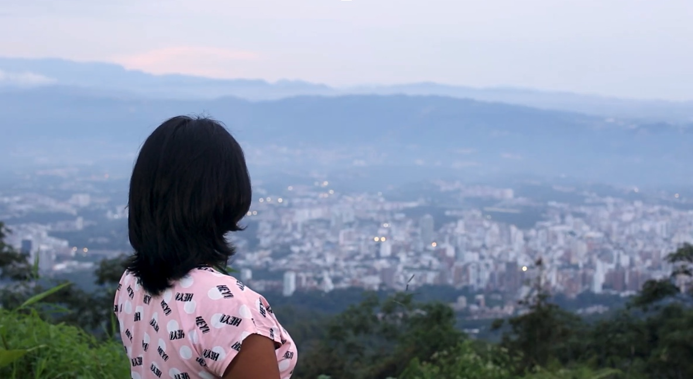

Barí Bio Asquiro - Documental (2023).
Cortometraje - Producción general y diseño sonoro
¡Hola! Soy Valeria Vásquez Gómez. Me apasionan los deportes como el tenis y el patinaje de velocidad, viajar y conocer culturas, la naturaleza y los animales, así como la fotografía y el sonido. Estoy a un paso de graduarme como Maestra en Artes Audiovisuales y cada vez me enamoro más de lo que hago y de la decisión que tomé. Elegir carrera fue complicado porque, como amante de la vida, todas me gustaban; al final elegí Artes Audiovisuales porque me permite navegar entre formatos mientras cuento historias a través de imágenes fijas y en movimiento, colores y sonidos, expresando ideas, emociones y perspectivas propias o de quien lo necesite de manera creativa.
Mi objetivo es contar historias que inspiren y conecten con las personas a través de la emoción, sin limitarme a un formato específico, pues la historia crea el formato y no al revés. Uno de mis formatos favoritos es el documental en cine y la publicidad mediante contenido digital en el mundo empresarial.
Me especializo en la dirección y producción de proyectos audiovisuales sobre temas sociales, culturales y medioambientales. En el futuro quiero aprender más sobre cómo emplear el storytelling para el crecimiento de empresas y marcas.
Soy una directora y productora audiovisual bilingüe (español nativo e inglés C1) , enfocada en contar historias con impacto. Actualmente, combino mi doble formación en Artes Audiovisuales y Administración de Empresas para liderar equipos y gestionar proyectos de cine, TV y digital, desde el desarrollo hasta la postproducción. Mi experiencia incluye la dirección y producción de múltiples proyectos documentales y de ficción , mi participación en un programa internacional en The Walt Disney Company , y la gestión de contenido digital que logró un incremento del 60% en ventas para una marca. Domino software clave de la industria como Adobe Premiere Pro, DaVinci Resolve y Pro Tools.
Descargar CVCortometraje - Producción general y diseño sonoro
Dirección y estética - logística
Cortometraje Animación - Apoyo en proyecto con parte visual y sonora
Desarrollo y producción
Codirectora y producción
Serie ganadora MINTIC y New York Independent Cinema Awards (2024-2025)
Documental - Diseño Sonoro
¡Me encantaría saber de ti! Si tienes un proyecto en mente o simplemente quieres saludar, no dudes en contactarme.
tu-email@correo.com